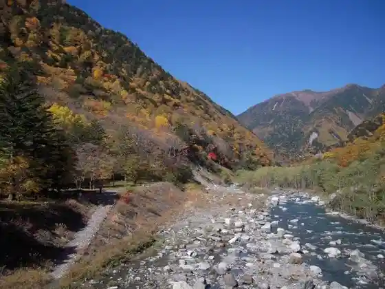
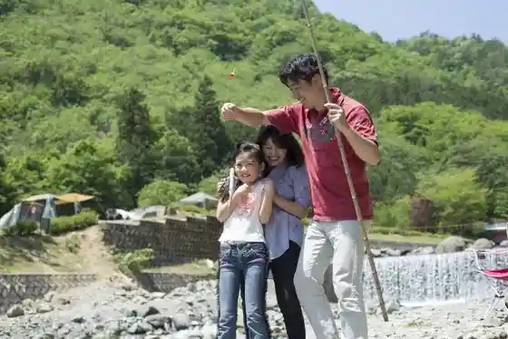
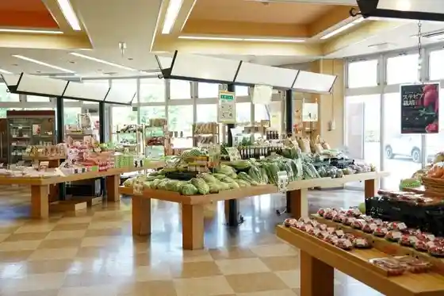
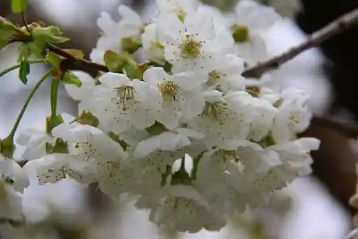

Kushigata Yama Miharashi Taira
Minamiarupusu, Yamanashi · 055-282-7261 · Official / source link
Hirogawara no Autumn Leaves
Minamiarupusu, Yamanashi · 055-282-7261 · Official / source link

Uesutoribaoto Campground
Minamiarupusu, Yamanashi · 055-285-6611 · Official / source link

no no Eki Happii Park
Minamiarupusu, Yamanashi · 055-285-2088 · Official / source link

Minamiarupusu Togenkyo Sakurambo no Hana
Minamiarupusu, Yamanashi · 055-282-6294 · Official / source link

Kan no Gaku
Minamiarupusu, Yamanashi · 055-282-7261 · Official / source link
Ono Taisho Sono
Minamiarupusu, Yamanashi · 055-282-4695 · Official / source link
Seiju Sono
Minamiarupusu, Yamanashi · 055-285-1628 · Official / source link
Nangoku Sono
Minamiarupusu, Yamanashi · 055-283-1071 · Official / source link
Nakagome Farm
Minamiarupusu, Yamanashi · 055-283-0584 · Official / source link
Cherii Garden Arashi
Minamiarupusu, Yamanashi · 080-7109-7007 · Official / source link
Kiyosumi Sono
Minamiarupusu, Yamanashi · 055-285-0067 · Official / source link
Sankei no Oga Yaki
Minamiarupusu, Yamanashi · 055-282-7261 · Official / source link
Hoshu Tera
Minamiarupusu, Yamanashi · 055-282-6294 · Official / source link
Kotaro Yama
Minamiarupusu, Yamanashi · 055-282-7261 · Official / source link
Senjogagaku
Minamiarupusu, Yamanashi · 055-282-7261 · Official / source link
Asayo Mine
Minamiarupusu, Yamanashi · 055-282-6294 · Official / source link
Minamiarupusu no Bara no Meisho |TDK Kofu Kojo
Minamiarupusu, Yamanashi · 055-284-3111 · Official / source link
Yamato Farm
Minamiarupusu, Yamanashi · 055-282-2526 · Official / source link
Minamiarupusu Joba Center (Shio Mae Furendorii Center)
Minamiarupusu, Yamanashi · 055-285-8181 · Official / source link
Sakuran Bo no Hara Farm
Minamiarupusu, Yamanashi · 090-8870-7195 · Official / source link
Tsukahara Yama Furutsu Nojo
Minamiarupusu, Yamanashi · 055-282-7884 · Official / source link
Wakakusa Kawara Hall
Minamiarupusu, Yamanashi · 055-283-5870 · Official / source link
Takao Ho Ken Shrine
Minamiarupusu, Yamanashi · 055-282-7269 · Official / source link
Myo Ryo Tera Cherry Blossoms
Minamiarupusu, Yamanashi · 055-282-7261 · Official / source link
Inagamizumi
Minamiarupusu, Yamanashi · 055-282-6294 · Official / source link
Toka Hashi (Rupu Hashi) Park
Minamiarupusu, Yamanashi · 055-282-6394 · Official / source link
O Chokushi Kawa Fukushi Park
Minamiarupusu, Yamanashi · 055-282-6394 · Official / source link
Yuzawa Park
Minamiarupusu, Yamanashi · 055-282-6394 · Official / source link
Yasha Kami Toge
Minamiarupusu, Yamanashi · 055-282-6294 · Official / source link
Misaki Shrine
Minamiarupusu, Yamanashi · 055-282-7261 · Official / source link
Toku Shima Segi Cherry Blossoms
Minamiarupusu, Yamanashi · 055-282-7261 · Official / source link
Minamiarupusu Ritsu Art Museum
Minamiarupusu, Yamanashi · 055-282-6600 · Official / source link
Ue City Yuki Se no Itozakura
Minamiarupusu, Yamanashi · 055-284-4204 · Official / source link
Sakurambo Kari Asakawa Farm
Minamiarupusu, Yamanashi · 090-4746-2192 · Official / source link
Minamiarupusu Togenkyo
Minamiarupusu, Yamanashi · 055-284-4204 · Official / source link
Domenu Hide
Minamiarupusu, Yamanashi · 055-244-6485 · Official / source link
Nishi Village Farm
Minamiarupusu, Yamanashi · 090-5801-7728 · Official / source link
Hotarumi Kyoko Sono Kara no Tanada
Minamiarupusu, Yamanashi · Official / source link
Fuji Farm
Minamiarupusu, Yamanashi · 055-285-0020 · Official / source link
Fuki Sono
Minamiarupusu, Yamanashi · 055-285-5787 · Official / source link